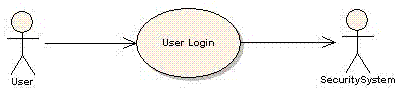
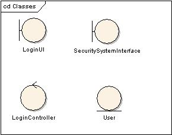
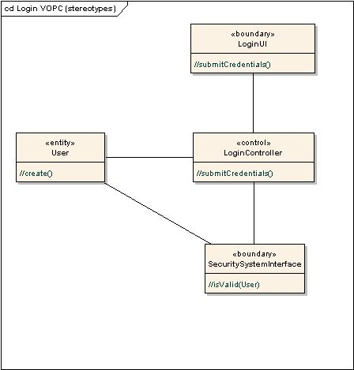
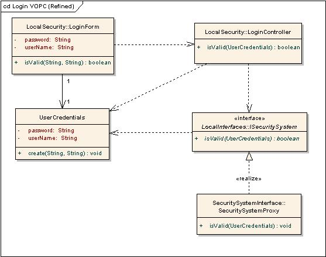
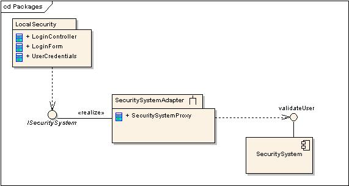

| Guideline: Designing Visually |
 |
|
| Related Elements |
|---|
IntroductionUsing visual modeling techniques to design software can help break down complex problems into a series of smaller, easier to manage tasks. Sharing pictures rather than written documents or source code also helps the understanding and communication of difficult concepts. Adopting standard modeling notations such as the UML increases this capability by helping to make diagrams precise and unambiguous. The degree of formality used when producing and disseminating models should vary according to your needs. Small, collaborative teams modeling around whiteboards and capturing the results on a sheet of paper or with digital cameras can yield good results. This can also help the team focus on producing software with the help of models; rather than becoming sidetracked into over-engineering both the models and the solution. Modeling tools provide additional value to projects, especially for more complex systems. Their specifics of use are outside the scope of this guideline, however. This guideline does not describe a formal sequential progression through prescriptive design steps. Whether some or all of these techniques are needed, or how long is spent on them will vary depending on real-world issues such as the complexity of the requirements; the experience of the designer; and the way the team works. This guideline uses a simplified scenario (Login) to help keep the focus on understanding the techniques rather than the specific requirements. In the real-world, it is doubtful that much time would be spent modeling a simple problem. Here is the use case diagram, for reference;  Identify elementsRender the identified design elements as classes in a UML diagram. Apply appropriate stereotypes and optionally render the class using an icon specific to the stereotype to characterize the intent of the class in the design. Name and briefly describe the classes in a few sentences. Do not spend too much time working on associations, as these will be developed through working on collaborations in the next step. Classes can be drawn as a basic UML rectangle or with a specific symbol associated with a particular stereotype. The resulting class diagram should be conceptually similar to this one:  For this example, the Entity-Control-Boundary Pattern has been used to derive two classes (LoginUI and LoginController). In addition, two design elements already identified in the architecture (SecuritySystemInterface and User) have also been incorporated. Determine how elements collaborate to realize the scenarioWhen determining collaboration, two kinds of diagrams are useful.
Remember to also update any other impacted diagrams as appropriate, based on modifications or additions to the design. Create a number of dynamic object diagrams that walk through how a set of objects collaborate to perform the behavior of the scenarios. Even if just one scenario is being designed, this might take multiple diagrams to render it in smaller, understandable chunks or from multiple contexts.
The above sequence diagram shows the user credentials being passed through to the security system for authentication. Steps in the use case scenario are transformed into messages between the participating objects. The messages in this example are not yet fully formed (there are no parameters or return values), so they are prefixed with "//" to show that more work is needed. A sequence diagram was used in this example, but a communication diagram could have been used. It can be useful to create one or more static class diagrams that show the classes in the design that support the realization. These class diagrams are often called View of Participating Classes diagrams, they provide a focused view on the overall design by only showing the classes, relationships, operations, and attributes relevant to the collaboration.  This diagram shows the operations and relationships that were identified by drawing the sequence diagram. The relationships in this example have not been refined yet, so they are just shown as simple associations. Remember to examine the diagram to verify that the design can support the behavior in the sequence diagram. Working at this level of detail in the model during the early stages of design can be helpful. It keeps the diagrams relatively simple and easy to understand. It makes them easier to draw in a workshop and easier to change during discussion. It is often easier to add the detail once there is agreement on the fundamentals. Refine design decisionsOnce the fundamentals of the design are relatively stable, you can begin to add detail to the design. Some of this can be performed in code or in the model. If modeling is chosen, then refine attributes, responsibilities and relationships. Describe responsibilitiesClass responsibilities are either actions to be performed by an object or knowledge maintained and provided to other objects. Each class will typically have several responsibilities; each responsibility will evolve into one or more operations during design. Responsibilities are derived from messages on interaction diagrams or from non-functional requirements that a class has to support. Document a responsibility by giving it a name, and optionally a brief description (what it does). These operations can be left as self-evident from their context, they can be given textual descriptions of the algorithm required to perform the behavior, or they could spawn off another whole pass of this technique where a set of classes that collaborate together to perform the internals of the operation are identified, etc. Describe attributes and associationsA class may have to store simple data information, like: string, integer, and the like. For such simple type of information, attributes are defined for classes. For a more complex or "behavioral" attribute, consider creating an extra class and establish an association to it. To perform their responsibilities, classes may depend on other classes to supply needed behavior. These other classes might be ones already identified in this design session, they might be existing classes pulled from the architecture, or the need for new classes might be conceived. Associations in a class diagram can be used to represent inter-class relationships.  This diagram shows a number of refinements. The LoginUI class has been replaced by LoginForm. The User class has been renamed UserCredentials and is created by the LoginForm class rather than LoginController. It is then used as a parameter for subsequent messages rather than passing the individual attributes. The SecuritySystemInterface class has been refined into two elements, ISystemSecurity, which provides a simple façade for interaction with the rests of the design; and SecuritySystemProxy, which handles interaction with the external security system. Design internalsThe classes in the design are likely to need to be distributed amongst different packages and subsystems or components.  In this example, the LoginForm, LoginController and UserCredentials elements have been placed in a package called LocalSecurity. The SecuritySystemProxy is a part of a subsystem called SecuritySystemAdapter which realizes the ISecuritySystem interface. The SecuritySystemAdapter wraps the legacy SecuritySystem, expressed here as a component offering a validateUser interface. Each of these packaged elements can be distributed amongst the team for further development work. ConclusionThis guideline walked through the techniques in a concrete manner started with a scenario of a use case through to distributing the classes identified into a set of packages. This example demonstrates a technique for designing visually, but it should be considered as just one conceptual pass of design. One could as easily apply this technique when defining the internals of how the SecuritySystemProxy class will collaborate with a set of classes to validate the credentials. When applying this guideline, work in small chunks and keep in mind the goal of delivering software to the users that provides value. To deliver high-quality software requires consideration of how the pieces will work together to deliver that value. But as soon as key decisions have been made and the decisions have been communicated to the appropriate team members, the team should move on to implementing the source code to verify the design and deliver the value. |

This program and the accompanying materials are made available under the |